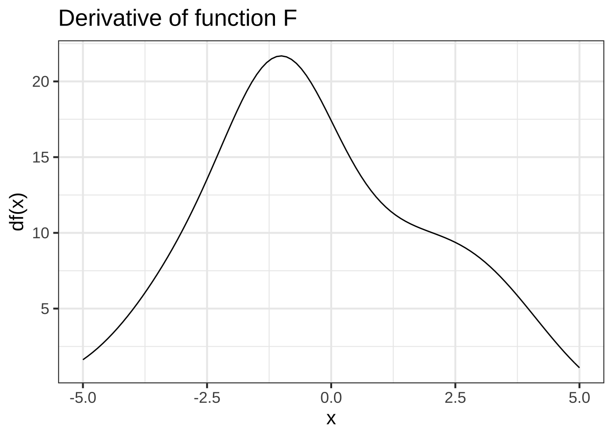

22 Derivs of assembled functions
In Section 21.2 we looked at differentiation of linear combinations. In this chapter, we’ll examine products of functions and compositions of functions.
22.1 Derivatives of the basic modeling functions
The basic modeling functions are the same as the pattern-book functions, but with bare \(x\) replaced by \(\line(x)\). In other words, each of the basic modeling functions is a composition of the corresponding pattern-book function with \(\line(x)\). As such, the derivatives of the basic modeling functions can be found using the chain rule.
Suppose \(f()\) is one of our pattern-book functions. Then \[\large\partial_x f(\color{magenta}{ax + b}) = \color{brown}{a} f'(\color{magenta}{ax + b})\] where \(\color{brown}{a}\) is the derivative with respect to \(x\) of \(\color{magenta}{ax + b}\).
Here are the steps for differentiating a basic modeling function \(\color{brown}{f}(\color{magenta}{a x + b})\) where \(f()\) is one of the pattern-book functions:
- Step 1: Identify the particular pattern-book function \(\color{brown}{f}()\) and write down it’s derivative \(\color{brown}{f'}\). For example, if \(f()\) is \(\sin()\), then \(f'()\) is \(\cos()\).
- Step 2: Find the derivative of the linear interior function. If the function is \(\color{magenta}{ax + b}\), then the derivative is \(\color{magenta}{a}\). Of the interior function is \(\frac{2\pi}{P}(t-t_0)\), the derivative is \(\frac{2 \pi}{P}\).
- Step 3: Write down the original function \(\large\color{brown}{f}(\color{magenta}{a x + b})\) but replace \(\large\color{brown}{f}\) with \(\large \color{brown}{f'}\) and pre-multiply by the derivative of the interior function. For instance, \[\partial_x f(\color{magenta}{ax + b}) = {\large \color{magenta}{a}}{\large f'}(\color{magenta}{ax + b})\] Another example: \[\partial_t \color{brown}{\sin}\left(\color{magenta}{\frac{2 \pi}{P}(t-t_0)} \right) = {\large \color{magenta}{\frac{2 \pi}{P}}}\color{brown}{\large\cos}\left(\color{magenta}{\frac{2 \pi}{P}(t-t_0) }\right) \]
By convention, there are different ways of writing \(\line(x)\) for the different naked functions, for instance:  2396
2396
\[\text{Pattern-book function} \ \ \ \longrightarrow\ \ \ \text{Basic modeling function}\\ \ \\ \sin(x)\ \ \ \longrightarrow\ \ \ \sin\left(\strut2 \pi \left[x-x_0\right]/P\right)\\ \exp(x)\ \ \ \longrightarrow\ \ \ \exp(k x)\\ x^2 \ \ \ \longrightarrow\ \ \ \left[mx + b\right]^2\\ 1/x \ \ \ \longrightarrow\ \ \ 1/\left[mx + b\right]\\ \ln(x) \ \ \ \longrightarrow\ \ \ \ln(a x + b)\\\]
The rule for the derivative of any basic modeling function \(f(\line(x))\) is \[\partial_x f(\line(x)) = \partial_x \line(x) \times \partial_x f\left(\strut\line(x)\right)\]
To illustrate:
- \(\partial_x e^{\color{magenta}{kx}} = {\large\color{magenta}{k}}\, e^{\color{magenta}{kx}}\)
- \(\partial_x \sin(2\pi (x-x_0)/P) = \frac{2\pi}{P} \sin(2\pi (x-x_0)/P)\)
- \(\partial_x (mx + b)^2 = m\, 2 (m x + b) = 2 m^2 x + m^2 b\)
- \(\partial_x \frac{1}{mx + b} = - \frac{m}{(mx + b)^2}\)
- \(\partial_x \ln(a x + b) = a/(ax+b)\)
- \(\partial_x \pnorm(x, mn, sd) = dnorm(x, mn, sd)\)
- \(\partial_x \dnorm(x, mn, sd) = - \frac{x}{sd} \dnorm(x, mn, sd)\)
You will be using the derivatives of the basic modeling functions so often, that you should practice and practice until you can write the derivative at a glance.
This note describes a “gotcha” that often catches even professional modelers. For the introductory student this serves more as a general reminder to be careful, and not as a primary fact to be remembered about the derivatives of the basic modeling functions.
The sigmoidal function can be written in the general \(f(\line(x))\) fashion:
- sigmoid: \(\pnorm\left(\frac{x-mn}{sd}\right)\)
But it’s also common to write it in the manner of statistics software where the parameters are given as separate arguments:
- sigmoid: \(\pnorm(x, mn, sd)\) which is completely equivalent to \(\pnorm\left(\frac{x-mn}{sd}\right)\)
It’s natural, but wrong, to assume that the same holds true for \(\dnorm(x, mn, sd)\), that is, that it could be written with a single input of the form \((x-mn)/sd\). That’s not true. In fact,
\[\dnorm\left(\frac{x-mn}{sd}\right) = sd\, \dnorm(x, mn, sd)\] Failing to remember the \(sd\) is a common pitfall, even among experienced modelers.
Even for seemingly simple tasks like computing \(\partial_x \pnorm\left(\left[x-mn\right] / sd\right)\), responsible practice calls for having a way to verify your result. For instance, you can compute the derivative of \(\pnorm(x, mn, sd)\) using the slope function with a small but finite \(h\) and compare that to your symbolic result.
Exercise 22.2: QIELS
Compare the functions \(f_1 \equiv \dnorm(x, mn, sd)\) and \(f_2 \equiv \dnorm\left(\left[x-mn\right]/sd\right)\) by plotting them out in a SANDBOX.
In order to construct the plot, you’ll have to pick specific values for \(mn\) and \(sd\). Make sure that you use the same \(sd\) and \(mn\) when constructing \(f_1()\) and \(f_2()\). For instance:
Question A When \(sd = 1\), are the two functions the same?
Yes Correct. Yes, but only if \(mn=1\) ︎✘ Yes, but only if \(mn=0\) ︎✘ No ︎✘
Question B When \(sd eq 1\), for any given \(mn\), the two functions are not the same. What’s the relationship between \(f_1(x)\) and $f_2(x)?
-
\(f_2(x) = sd\, f_1(x)\) Nice!
-
\(f_1(x) = sd\, f_2(x)\) ︎✘
-
\(f_1(x) = sd^2 f_2(x)\) ︎✘
- \(f_2(x) = sd^2 f_1(x)\) ︎✘
Exercise 22.4: HCILW
Pilots of commercial passenger aircraft take the comfort of their passengers into account when flying. In transitioning from level flight onto the descent path for landing, for example, pilots take care that the vertical component of acceleration isn’t so great that passengers feel the plane “falling out from under them.”
A simple model of the descent path is a sigmoid function. Suppose that the descent starts from an altitude of \(A = 20,000\) feet at a distance of 30,000 feet from the end of the runway. A reasonable model for the path is \[\text{alt}(x) \equiv A\,\pnorm(x,\ \ mn=30000/2,\ \ sd=30000/6)\] The vertical acceleration is the second derivative of alt() with respect to time: \(\partial_{tt} \text{alt}(t)\). But notice that the definition of alt() is in terms of distance from the runway, \(x\), not \(t\). It’s the plane’s velocity that relates \(x\) and \(t\). For instance, \[x = v (t - t_0)\]
Suppose that the aircraft is flying at 200 miles-per-hour (the “speed limit” for aircraft at or below 10,000 feet).
Question A What is the equivalent of 200 miles-per-hour in feet-per-second?
-
\(200 \times 3600/5280\) ft/s ︎✘
-
\(200 \times 5280/3600\) ft/s Correct.
-
\(5280 \times 3600/200\) ft/s ︎✘
- \(5280/(3600 \times 200)\) ft/s ︎✘
In a sandbox, re-write \(\text{alt}(x)\) as \(f(t) \equiv \text{alt}\left(-v \left[t - t_0\right]\right)\). Set \(v\) to the plane’s velocity in feet per second. For our purposes, it doesn’t matter what \(t_0\) is; you can set it to zero. (\(t_0\) is the plane’s arrival time at the foot of the runway.) Plot out the function choosing a domain for \(t\) that lets you see the whole descent path.
f <- makeFun(pnorm(- 20000* v* t, 30000/2, 30000/6) ~ t, v = __your_velocity_here__)
slice_plot(f(t) ~ t, domain(t=__your_domain_here__))Compute the second derivative \(\partial_{tt} f(t)\) to find the vertical component of acceleration of the aircraft. (Important note: Due to a bug in R, use numD() rather than D() to compute the second derivative.)
Graph the second derivative over the appropriate domain and look for the most extreme values of acceleration.
ddf <- numD(f(t) ~ t + t)
slice_plot(ddf(t) ~ t, domain(t=__your_domain_here__))
A rule of thumb is that a vertical acceleration up to \(5\, \text{ft}\, \text{s}^{-2}\) is not discomfiting. Regrettably, the descent path we described doesn’t meet the standard! So we have to re-design the descent path. Since both the altitude and velocity are set, the only parameter you can change is the distance from the foot of the runway where descent commences.
Question B How far from the foot of the runway should descent begin in order to stay within the \(5\, \text{ft}\, \text{s}^{-2}\) acceleration constraint? Pick the shortest distance that satisfies the constraint.
40,000 ft ︎✘ 50,000 ft ︎✘ 60,000 ft Excellent! 70,000 ft ︎✘ 80,000 ft ︎✘
For reflection: A new hire at the airline’s operations center proposes to model the descent as a straight-line function rather than a sigmoid. He points out that the second derivative of a straight-line function is always 0, so the passengers would feel no acceleration at all! Explain to this newbie what’s wrong with his idea.
22.2 The steps
We’re going to focus on assembled functions involving two basic modeling functions. In the following, I’m going to use the names \(f()\) and \(g()\), but in practice the functions will be basic modeling functions, for instance \(e^{kx}\) or \(\sin\left(\frac{2\pi}{P}t\right)\) or \(\ln(x/x_0)\), etc.
22.2.1 Step 1: Identify f() and g()
We will write the rules in terms of two function names, \(f()\) and \(g()\), which can stand for any functions whatsoever. It’s rare to see the product or the composition written explicitly as \(f(x)g(x)\) of \(f(g(x))\). Instead, you are given something like \(e^x \ln(x)\). The first step in differentiating the product or composition is to identify what are \(f()\) and \(g()\) individually. 2400
In general, \(f()\) and \(g()\) might be complicated functions, themselves involving linear combinations, products, and composition. But to get started, we’ll practice with cases where they are simple, pattern-book functions. 2405
Exercise 22.06: 3ICCCz
For each of the following, say whether the function is a composition \(f(g(x))\) or a product \(f(x) g(x)\), or neither.
Question A What sort of combination is \(h_1(x)\equiv \ln(x) e^x\)?
product Good. composition ︎✘ neither ︎✘
Question B What sort of combination is \(h_2(x)\equiv \sin(x) \cos(x)\)?
product Nice! composition ︎✘ neither ︎✘
Question C What sort of combination is \(h_3(x) \equiv \sin(\cos(x))\)?
product ︎✘ composition Correct. neither ︎✘
Question D What sort of combination is \(h_4(x) \equiv e^{\ln(x)}\)?
product ︎✘ composition Good. neither ︎✘
Question E What sort of combination is \(h_5(x) \equiv \sin(x) - \cos(x)\)?
product ︎✘ composition ︎✘ neither Correct.
Question F What sort of combination is is \(h_6(x) \equiv e^{x^2}\)?
product ︎✘ composition Excellent! neither ︎✘
Question G What sort of combination is \(h_7(x) \equiv \pnorm(x^2)\)?
product ︎✘ composition Correct. neither ︎✘
Question H What sort of combination is \(h_8(x) \equiv \pnorm(x) \dnorm(x)\)?
product Nice! composition ︎✘ neither ︎✘
Question I What sort of combination is \(h_9(x) \equiv 1/\sin(x)\)?
- product ︎✘
- composition Excellent! Remember, \(1/\sin(x)\) is the same as \(\recip(\sin(x))\).
- neither ︎✘
Exercise 22.08: QFzIOl
In function compositions of the form \(f\left(\strut g(x)\right)\), the function \(f()\) is called the exterior function and \(g()\) is called the interior function.
Question A In \(\cos(\ln(x))\) which is the interior function?
-
\(\ln()\) Excellent!
-
\(\cos()\) ︎✘ This is the exterior function.
-
\(\sin()\) ︎✘ Sine has nothing to do with it!
- None of the above ︎✘
- It’s not a function composition ︎✘
Question B In \(1/\sin(x)\) which is the exterior function?
-
\(\recip()\) Excellent!
-
\(\cos()\) ︎✘
-
\(\sin()\) ︎✘ This is the interior function.
- None of the above ︎✘
- It’s not a function composition ︎✘
Question C In \(\sin\left(\frac{2 \pi}{P} (t-t_0)\right)\) which is the exterior function?
-
\(t-t_0\) ︎✘
-
\(\frac{2\pi}{P}\) ︎✘
-
\(\frac{2\pi}{P} t\) ︎✘
-
\(\frac{2\pi}{P} (t-t_0)\) ︎✘
-
\(\sin()\) Excellent!
- None of the above ︎✘
- It’s not a function composition ︎✘
Question D In \(\sin\left(2 \pi (t-t_0)/P\right)\) which is the interior function?
-
\(t-t_0\) ︎✘ That’s part of it.
-
\(2\pi /P\) ︎✘ That’s part of it.
-
\(2\pi t /P t\) ︎✘ That’s part of it.
-
\(2\pi (t-t_0)/P\) Good.
-
\(\sin()\) ︎✘ This is the interior function.
- None of the above ︎✘
- It’s not a function composition. ︎✘
Question E In \(\sin(x)\cos(x^2)\), which is the interior function?
\(x^2\) ︎✘ \(x\) ︎✘ \(\cos(x^2\) ︎✘ None of the above ︎✘ It’s not a function composition. Correct.22.2.2 Step 2: Find f’() and g’()
For differentiating either products or compositions, you will need to identify both \(f()\) and \(g()\) (the first step) and then compute the derivatives \(\partial_x f()\) and \(\partial_x g()\). That is, you’ll write down four functions. 2410
Exercise 22.10: jYXYTF
For each of the \(h_i()\) in the previous section, fill in a row of the following table. (The row for \(h_1()\) is already entered.)
| Name | \(f()\) | \(g()\) | \(\partial_x f()\) | \(\partial_x g()\) |
|---|---|---|---|---|
| \(h_1()\) | \(\ln(x)\) | \(e^x\) | \(\recip\) (that is \(1/x\)) | \(e^x\) |
| \(h_2()\) | ||||
| \(h_3()\) | ||||
| \(h_4()\) | ||||
| \(h_5()\) | ||||
| \(h_6()\) | ||||
| \(h_7()\) | ||||
| \(h_8()\) | ||||
| \(h_9()\) |
22.2.3 Step 3: Apply the relevant rule
Recall from Chapter 11 that will will be working with three important forms for creating new functions out of existing functions:
- Linear combinations, e.g. \(a f(x) + bg(x)\)
- Products of functions, e.g. \(f(x) g(x)\)
- Compositions of functions, e.g. \(f\left(g(x)\right)\)
22.3 Linear combinations
The derivative of a linear combination is the linear combination of the derivatives. That is:
\[\partial_x \left[\strut \color{magenta}{a} \color{brown}{f(x)} + \color{magenta}{b} \color{brown}{g(x)}\right] = \color{magenta}{a} {\large\color{brown}{f'(x)}} + \color{magenta}{b} {\large\color{brown}{g'(x)}}\] ::: {.example} The derivative of a polynomial is a polynomial of a lower order.
Consider the polynomial \[h(x) = \color{magenta}{a}\color{brown}{x^0} + \color{magenta}{b} \color{brown}{x^1} + \color{magenta}{c} \color{brown}{x^2}\] The derivative is \[\partial_x h(x) = \color{magenta}{a}\color{brown}{0} + \color{magenta}{b}\, \color{brown}{1} + \color{magenta}{c}\, \color{brown}{2 x} = \color{magenta}{b} + \color{magenta}{2 c}\ x\]
22.4 Product rule
Written in terms of the pronoun functions \(f()\) and \(g()\), the product rule is
\[\Large\partial_x \left[\strut \color{magenta}{f(x)}\times \color{brown}{g(x)}\right] = \color{magenta}{[\partial_x f(x)]} \times \color{brown}{g(x)}\ \ {\mathbf +}
\ \ \color{magenta}{[\partial_x g(x)]} \times \color{brown}{f(x)}\]
Some people find it easier to read the rule in Lagrange shorthand, where f and g stand for \(f(x)\) and \(g(x)\) respectivly, and f’ (“f-prime”) and g’ (“g-prime”) stand for \(\partial f()\) and \(\partial g()\). 2415
\[\Large\text{Lagrange shorthand:}\ \ \partial[\color{magenta}f \times \color{brown}g] = [\color{magenta}f \times \color{brown}g]' = \color{magenta}{f'}\color{brown}g + \color{brown}{g'}\color{magenta}f\] Let’s start with some very simple examples where we already know the answer:
We know \(\partial_x x^3 = 3 x^2\) so lets check when we write \(x^3\) as \(x^2 x\): \[\large\partial [\color{magenta}x \times \color{brown}{x^2}] = \color{magenta}{[\partial x]} \times \color{brown}{x^2} \ +\ \color{brown}{[\partial x^2]} \times \color{magenta}x =\color{magenta}1\times \color{brown}{x^2} + \color{brown}{2x} \times \color{magenta}x = 3 x^2\]
We know that \(e^x \times e^x = e^{2x}\) so \(\partial_x [e^x \times e^x] = 2 e^{2x}\). Let’s check this against the product rule’s result:
\(partial_x [\color{magenta}{e^x} \times \color{brown}{e^x}] = \color{magenta}{[\partial_x e^x]} \times \color{brown}{e^x} \ + \ \color{brown}{[\partial_x e^x]} \times \color{magenta}{e^x} = 2 e^x e^x = 2 e^{2x}\)
22.5 Composition (“chain”) rule
Written in terms of functions \(f()\) and \(g()\), the rule for the composition \(f(g(x))\) is
\[\Large\partial_x \left[\strut \color{magenta}{f\left(\strut\right.}\strut \color{brown}{g(x)}\color{magenta}{\left.\right)}\right] = [\color{magenta}{\partial_x f}](\color{brown}{g(x)}) \times [\color{brown}{\partial_xg(x)}]\] Or, using the Lagrange prime notation \[\large\text{Lagrange shorthand:}\ \ \partial[\color{magenta}f(\color{brown}g)] = \color{magenta}{f'} (\color{brown}g) \times \color{brown}{g'}\]
This is almost universally called the chain rule, presumably because the result involves a chain of derivatives.
Again, we’ll practice with some simple examples where we already know the result:
-
\(\partial [\exp\left(\ln(x)\right)] = [\partial \exp](\ln(x)) \times \partial_x \ln(x) = \exp\left(\ln(x)\right) \times 1/x\)
Since \(\exp\left(\ln(x)\right) = x\) we can simplify the above \[\partial [\exp\left(\ln(x)\right)] = \exp\left(\ln(x)\right) \times 1/x = x/x = 1\] which is consistent with what we know about \(\partial_x x\).
2420 -
\(\partial[ \recip(x^2)] = [\partial \recip](x^2) \times \partial_x x^2 = [\partial\, \recip](x^2) \times 2 x\)
Since \(\partial_x \recip(x) = \partial_x [1/x] = \partial_x x^{-1} = -x^{-2} = - \frac{1}{x^2}\), we can simplify the above to \(\partial[ \recip(x^2)] = [\partial_x \recip](x^2) \times \partial_x x^2 = - \frac{1}{(x^2)^2} \times 2 x = -2 \frac{x}{x^4} = -2 x^{-3}\)
The chain rule lets us use what we know about the derivatives of the pattern-book functions to figure out the derivatives of the basic modeling functions. Remember, that each of the basic modeling functions is the composition of a pattern-book function with \(\line(x) \equiv ax + b\). 2425
- \(\large\partial_x [\color{brown}\sin(\color{magenta}{a x + b})] = [\partial_x \color{brown}{\sin}](\color{magenta}{a x + b}) \times \partial_x [\color{magenta}{ax + b}] = \color{brown}{\cos}(\color{magenta}{ax + b}) \times \color{magenta}a\).
Exercise 22.12: ed6q4v
Recall from Section 11.2 the Lorenz curve used to describe income inequality. The Lorenz curve shows the fraction of total income versus population fraction.
Figure 22.1: A Lorenz curve (blue) fitted to income data from the US in 2009. (See Figure 11.1.)
Since the population is arranged from poorest to richest along the horizontal axis, Lorenz curves must be both monotonically increasing and concave up. That is, any Lorenz function \(L(P)\), where \(P\) is the population fraction, must satisfy these criteria:
- \(L(0) = 0\)
- \(L(1) = 1\) that is, the aggregate fraction of income earned by the entire population is 100%.
- \(\partial_P L(P) \ > \ 0\) that is, monotonically increasing
- \(\partial_{PP} L(P) \ > \ 0\) that is, concave up.
Consider a function \(H(P) \equiv L_1(L_2(P))\) which is the composition of two Lorenz curves.
- A. Use the composition rule to show that \(H(P)\) is monotonically increasing. (Hint, calculate \(\partial_P H(P)\) and show that it must be positive.)
- B. Using both the composition and product rules, calculate \(\partial_{PP} H(P)\) and show that \(H(P)\) must be concave up.
22.6 Exponentials and logarithms (optional)
The natural logarithm function, \(\ln(x)\), is one of our basic modeling functions. The digit() function, introduced in Chapter 15 is different, the logarithm-base-10, written \(\log_{10}(x)\) or log10(x). Ten an integer, and a nice round number to boot. So in practice, it’s “natural” to use \(\log_10()\). The “natural” in the “natural logarithm” means something different. 2430
The base of the natural logarithm is the number called Euler’s constant and written \(e\). As a celebrity number, \(e\) is right up there with \(\pi\) and \(-1\). Just as \(\pi\) has a decimal expansion that is infinitely long, the familiar \(\pi = 3.14159265358979...\), Euler’s constant has an infinitely long decimal representation: \(e = 2.71828182845905...\) 2435
It’s not obvious at first glance why \(e = 2.71828182845905...\) should be called “natural” by mathematicians. The reason is not the number itself, but
- the derivative \(\partial_x \ln(x)\) which has a particularly simple form, namely, \(1/x\).
- \(\ln(x)\) is the inverse of \(e^x\), which itself is the nicest of all derivatives \(\partial_x e^x = e^x\).
Let’s look at the log-base-10 and it’s computer-savvy cousin log-base-2. The very definition of logarithms means that both 10 and 2 can be written \[10 = e^{\ln(10)}\ \ \ \text{and}\ \ \ 2 = e^{\ln(2)}\] This implies that the base-10 and base-2 exponential functions can be written
\[10^x = [e^{\ln(10)}]^x = e^{\ln(10)x} \ \ \ \text{and}\ \ \ 2^x = [e^{\ln(2)}]^x = e^{\ln(2) x}\] Calculating \(\partial_x 10^x\) or \(\partial_x 2^x\) is a matter of applying the chain rule:
\[\partial_x [10^x] = \partial_x [e^{\ln(10)x}] = e^{\ln(10)x} \times \ln(10) = 2.30258509299405... \times 10^x\\ \ \text{and}\\ \partial_x [2^x] = \partial_x [e^{\ln(2)x}] = e^{\ln(2)x} \times \ln(2) = 0.693147180559945...\times 2^x\] Like \(e^x\), the derivatives of \(10^x\) and \(2^x\) are proportional to themselves. For \(e^x\) the constant of proportionality is 1, a very natural number indeed.